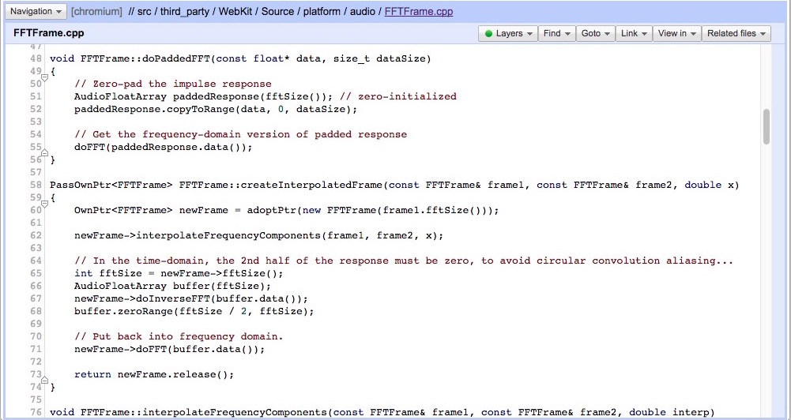
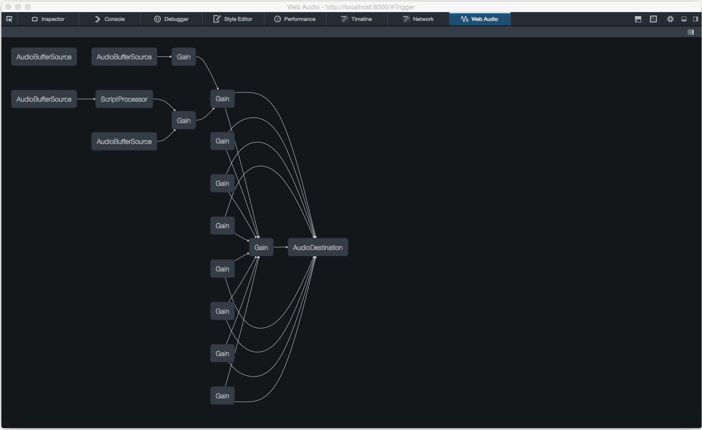

Web Audio
An emerging platform for Audio applications
FOSSASIA 2015
About Me..

Agenda
- What is WebAudio??
- Why WebAudio matters??
- How to use WebAudio??
What?? - History
- bgsound
- <object> , <embed>
- <audio>
- Audio Data API
- Web Audio API

- ← Flash
- ← HTML5

What?? - Philosophy
... include the capabilities found in modern game audio engines as well as some of the mixing, processing, and filtering tasks that are found in modern desktop audio production applications.— W3C WebAudio Draft Spec
What?? - Status
What?? - Status
| Specification | FPWD | LC | CR | PR | Rec |
|---|---|---|---|---|---|
| Web Audio API | Dec 2011 | Q1 2014 | Q3 2014 | Q1 2015 | Q1 2015 |
— http://www.w3.org/2011/audio/wiki/W3C_Audio_Publications_and_Milestones#Latest_Estimates
What?? - Status
Why Audio on the Web??
→ Distribution
- Cross Platform (Mobile, Desktop, etc)
- Share via a URL
- Eg. Animated SoundWorks
Why Audio on the Web??
→ Collaboration
- Real-time control (WebSockets)
- Real-time collaboration (WebRTC)
- Eg. SoundTrap
Why Audio on the Web??
→ Expression
- Integration with visual elements
- Integration with interactive elements
- Eg. Allen the Alien
Why in the browser??
→ Open Standards
- Flash sucked for doing real-time audio
- Dependency on Adobe + Browser Vendor
- No visbility/control over changes and features
"signal routing graph paradigm"


How?? - Implementation
→ Javascript API
// Create Context and Nodex
var audioCtx = new AudioContext();
var oscillator = audioCtx.createOscillator();
var filter = context.createBiquadFilter();
// Set parameter values
oscillator.detune.value = -400;
filter.type = filter.LOWPASS;
filter.frequency.value = 5000;
// Connect nodes
oscillator.connect(filter);
filter.connect(audioCtx.destination);
// Create Context and Nodex
var audioCtx = new AudioContext();
var oscillator = audioCtx.createOscillator();
var filter = context.createBiquadFilter();
// Set parameter values
oscillator.detune.value = -400;
filter.type = filter.LOWPASS;
filter.frequency.value = 5000;
// Connect nodes
oscillator.connect(filter);
filter.connect(audioCtx.destination);
How?? - Implementation
→ Audio Processing done at a lower level (C++/ASM) 
How?? - Implementation
→ Realtime (Callback Based)
var sp = context.createScriptProcessor();
sp.onprocess = function (processEvent){
/* fill your own buffer */
var out = autoTune(processEvent.inputBuffers);
processEvent.outputBuffers = out;
}
sp.connect(context.destination);
var sp = context.createScriptProcessor();
sp.onprocess = function (processEvent){
/* fill your own buffer */
var out = autoTune(processEvent.inputBuffers);
processEvent.outputBuffers = out;
}
sp.connect(context.destination);
Upcoming Changes
ScriptProcessor → AudioWorker
ScriptProcessor inside a WebWorker
How?? - Parameters
→ Automation (synchronous automated value change)
playRate.setValueAtTime(2, 5);
frequency.linearRampToValueAtTime(400, 2);
delayTime.exponentialRampToValueAtTime(3.1, 10);
pan.setTargetAtTime(-1, 7.2);
gain.setValueCurveAtTime([0, 1, 0.7, 0.7, 0.5, 0.2, 0], 0, 0.5)
How?? - Parameters
→ Connect Nodes to Parameters
var osc = context.createOscillator();
var gain = context.createGain();
// Connect oscillator to gain
osc.connect(gain.gain);
// Connect buffer to gain and gain to output
buffer.connect(gain);
gain.connect(context.destination);
AM : Message : Carrier :
FM : Message : Carrier :
Tone.js

SoundModels
BabylonJS

Firefox WebAudio Inspector
RecorderJS